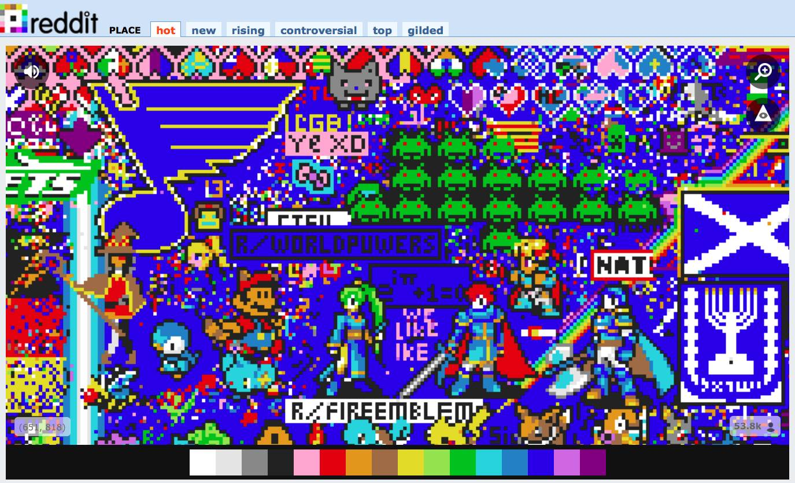
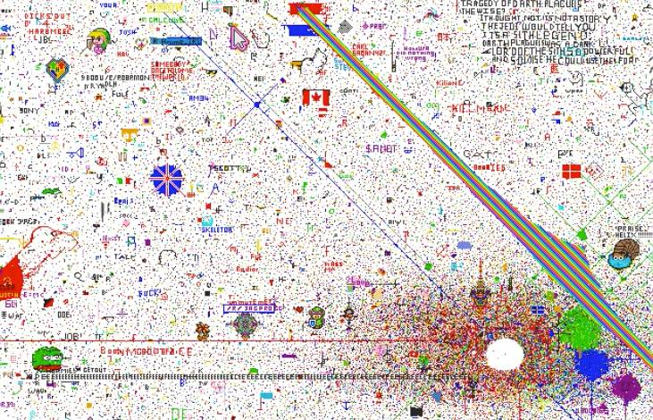
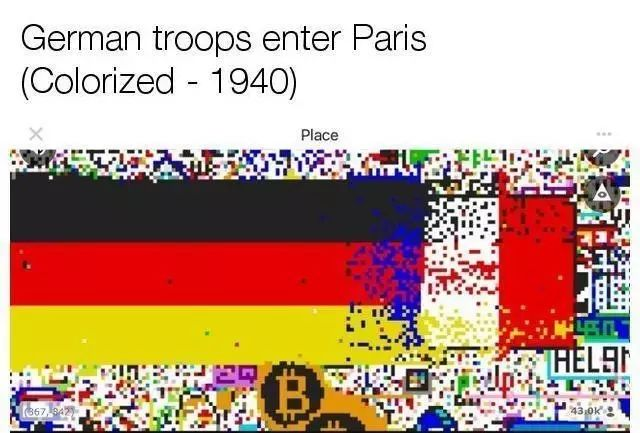
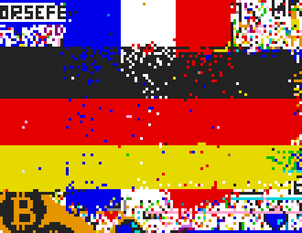
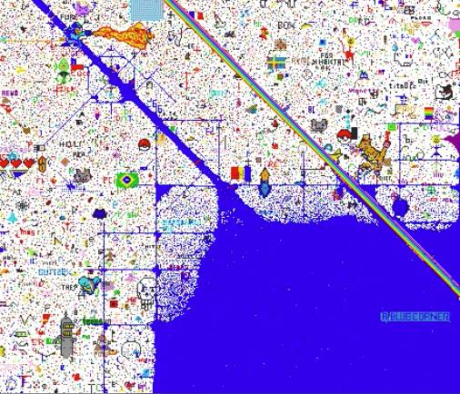
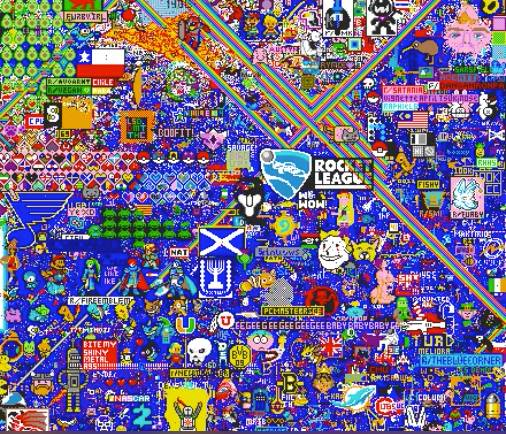
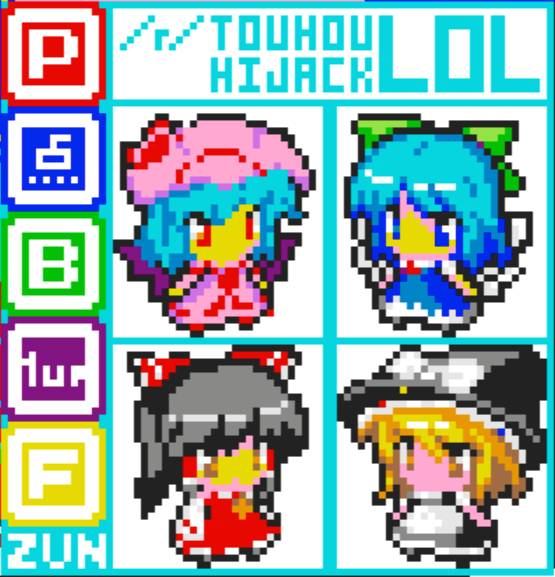
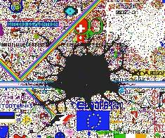
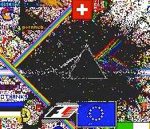
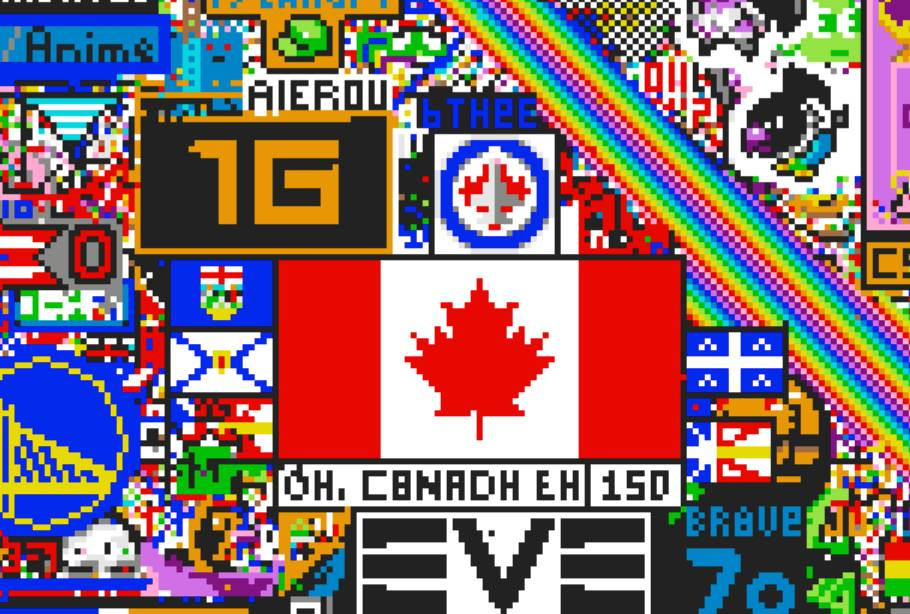

参与这场线上大战之后，我觉得人类未来还是有希望的
Contents

4.1日愚人节，是每家互联网公司玩各种花样的时候。除了庸俗的愚人节玩笑，总有一些公司会在这一天做出来异乎寻常的举动，以前Google曾经在这天推出过Gmail。而今年最出风头的，是Reddit。
Reddit上线了一个叫做Place的节点，它是一块空白的巨大画布，每个用户每10分钟会得到一个机会，可以选一种颜色，在上面点一个点（后来间隔时间被修改成5分钟）。规则本身非常简单，但和Reddit的气质非常贴合，Reddit本来就是一个靠投票和用户贡献来产生内容的网站，用户参与度很高。这不仅是一个出色的愚人节项目，也是一个伟大的尝试，在这种完全自由，不受管控，只有简单规则的活动里面，人们之间会产生什么样的互动？人们会倾向于创造还是倾向于破坏？会协作还是互相攻击？会不会有令人难以接受的冒犯性图案长期存在，比如三K党或者纳粹之类？ 一切都是未知的，我猜Reddit自己在发布之前对这些问题也只有模糊的判断，没有确定的答案。我被这个神奇的产品强烈的吸引住，花了很多时间去围观以至于深度参与它，现在游戏还在继续，但是我已经有了不少值得写下来的东西。

图: Reddit Place界面
Place可以被理解成一个大型的开放世界多人在线游戏，它始终保持了几万人同时在线。从规则上看，10分钟画一个点这个约束让它变得非常像现实世界，个体在这里非常无力，人们必须组织起来才能达到很微小的目标。我尝试过在上面画字母，哪怕连续画出来3个字母，以个人之力都难以完成。应该开始每个人都尝试过单打独斗和挫败，很快，来自不同国家，不同文化背景，有不同特征和不同政治观念的人，开始形成了各种组织，共同进行表达和创造。差不多24小时过去了，到目前为止，对前面的问题我有了一些确定的答案：创造者占了绝对上风，但破坏者一直存在。协作占主流，也创造出了很多优秀的作品，但互相攻击也始终存在。冒犯性的图案出现过，但难以长期存活，很快就被其他人共同消灭了。 这颇似人类社会发展的历史过程，无论有怎么样的曲折，最终社会还是往前发展的。
游戏开始没多久，画布上很快就开始有各种成型的图案。最早出现的图案多数带有一些色情意味，有点像街头墙上拿粉笔随手涂出来的涂鸦，这个时期的图案基本都是人们心神领会的自然组合。很快，原来存在的各reddit板块上的人们迅速组队，设计好图案大家一起画，成建制的组织开始出现，从而让图像创作水平大大提高。随即画布上开始出现各国国旗，网上流传的梗，比如4chan的青蛙、彩虹猫之类。

图：游戏开始不久的样子
和现实世界一样，开始的时候人们很平等，每人都是一样的权利，但随后人们形成部落，一些人成为领袖，发出倡议，其他人追随。这种变化是天然形成的，就算是在这种完全自然的、没有对其他人惩罚和约束方式的世界里面仍然如此。组织起来的人们就可以完成更大的目标。
几个小时之后，国家之间的战争产生了。德国人迅速扩大自己的国旗（三色旗真好，可以很容易向两头无限扩大）转眼之间就冲向了法国国旗，用德国国旗覆盖了法国国旗所在的位置。这次行动太引人注目了，围观群众惊呼：“1940，德国军队占领巴黎”。法国抵抗了一阵，发现实在难以抵抗德国人入侵，于是迅速在垂直位置正上方画出了一面新国旗，人们在论坛上嘲笑法国人永远记得如何逃跑，但法国人坚定的回答这是“战略性撤退，拿破仑说的”。

图: 1940德国占领巴黎
随后法国展开反攻，继续向下方德国国旗位置延伸。双方在这里进行了很久拉锯战，非常像真实的二战历史。

图: 法国撤退之后反击
围观群众给出了各种让双方和平共处的建议，比如这样：

或者这样

不过最后发生的事情比这些有意思的多，在双方交叉的位置，混战之后，最终变成了欧盟旗帜。更巧的是在欧盟旗完成的那一瞬间，一批画彩虹的人们恰好把彩虹延伸到这里，彩虹飞过的时候，欧盟诞生了。从此德国和法国争端结束，双方除了维护自己的国旗不被别人破坏，同时还一起维护欧盟旗的完整。

动图：彩虹之后，欧盟诞生
整个游戏像一部简略版的人类历史。这里面充分展现了沟通和工具对人类社会的意义，几个小时之后，从简单的论坛发帖和心照不宣组队，人们开始使用更复杂的工具，比如用绘图工具先制作图样，参与者投票表决，达成一致之后迅速推进完成它。或者在slack/discord之类的基于聊天的协作工具上建立沟通机制，讨论一些问题。比如我参加的PlaceCanada里面，加拿大和魁北克问题迅速得到了解决，双方小规模的互相骚扰停止，人们通过协商谈判达成共识，搁置加拿大和魁北克争议，不互相攻击，魁北克旗占据加拿大旗的一个固定比例，大家一起扩展和移动。聊天频道里面英语法语轮番出现，非常壮观。同时还逐渐建立起了和其他组织之间的沟通渠道，比如有专人负责对外沟通，和其他组织讨论范围。我也经历了PlaceCanada和北边的1G组织谈判，希望对方向上移动4像素，以便加拿大扩展国旗面积。经过几十分钟的谈判最后终于生效，双方发布停战协议，加拿大人帮助对方一起完成移动工作。这都是真实世界一直在发生和使用的机制。它们不是完美的方式，整个世界的小规模的摩擦始终不断，但是它们确实解决了很多问题，大规模的战役很少发生。在虚拟世界里面，人们逐渐形成了一个共识，大规模战争是没有意义的：“不要浪费10分钟一次的像素互相攻击，还是去创造更重要”。
这张图上包含了多少组织难以计算，其中还有一些有意思的组织，比如“蓝角”，他们的目标是从右下角开始，逐渐把更大的面积染成蓝色。他们不创造任何东西，只是单纯扩张染色，有点恐怖组织的感觉。他们因为无聊而生，但因为行为模式简单，起初很容易吸引参与者。在最开始的几个小时里面，他们有着恐怖的执行能力。他们会先在图上想占领的区域打出大方格，然后大家一拥而上，分成很多小组同时把很多方格填满，效率极高，从打方格的范围看，这个组织起初的野心非常大。

图: 开始阶段的“蓝角”非常可怕
但很快，他们的计划就无法持续了。蓝色区域扩大到一定面积之后，其他人开始以蓝色的区域做为画布背景，在上面画出新的图案。这时候“蓝角”进入了两难状态，是继续向前染出更大的面积，还是扭头维护已有区域，把其他人画的图像用蓝色重新覆盖掉。这种两难状态非常尴尬，无论选择哪个，都需要花费大量的人力，参与者是有限的，难以两者同时兼顾。但扩展的势头一旦减弱，他们起初那种“野蛮的恐怖魅力”就消失了，反而变得有点可笑。这又影响了他们招募更多人加入组织，结果就是地盘和人力同时流失，变成了塌陷的循环，最终，到我写这篇文章的时候，蓝色区域已经被各种图案完全占满了，它们仅仅成为了背景。这不是一个偶然的案例，画布上还有好几个类似的组织，占领了不同的角落，以不同的颜色为代表，都用类似的模式扩展，但几个小时之后都以一样的模式消亡了。这也颇似现实情况，极端组织的确难以清除，但也不可能无限制扩展。最终还是创造和建设会吸引更多人参与，共同的文化认同感才是一切的基础。

图: 现在的“蓝角”已经消失了
对于整张画布而言，最出色的组织是动漫、游戏、国旗等等有强烈身份认同组织。他们本身也有完善的组织，很容易组织起来完成符合自己文化认同的目标。比如“东方系列”的同人组织就迅速完成了一副高水平精美作品。

或者这张星月夜也算最高水平作品之列。
破坏性组织也有好玩的，比如这个黑洞组织就很有趣，他们比“蓝角”强在有一定艺术性，看起来也好看。

黑洞的扩展也比较快，甚至一度侵蚀了下方的欧盟旗。不过后来人们利用黑洞创造的黑色区域，把它变成了Pink Floyd月之暗面专辑封面。

除了填色块，人们还开发了各种工具。比如定时截图，然后一帧一帧自动拼成视频。这个工具非常有用，可以反复回放整个游戏过程，看到各种位置的变化。或者一些填色辅助工具，比如把图案变成写着坐标的填色指引，让新手也很容易参与工作。更有意思的是分析工具，当人们发现地图上的LGBT相关内容总是被破坏的时候，就有人开始写工具去追踪到底是谁在搞破坏。因为每一个点都可以追踪到填色人，reddit上用户的行动是可见的，可以看到发帖和回复的历史。这样就可以通过分析找到在某个区域填色人的共同板块。几乎毫无意外，很快就找到了背后的川普支持者组织。人们迅速组织了反攻，用“One World, One Love”文字盖住了川普图案的脸…
还有一些人组成了“修理工”组织，口号是“不参与任何争端，只修复被破坏的东西”。他们抵消了新用户随便测试造成的破坏，以及一些无组织的个人破坏行为，算是秩序的维护者。
回放整个视频的时候，想到背后发生的这些事情，人们如何组织起来，如何确立目标，实现它，还是非常令人震撼的。互联网和工具改变了太多的事情，虽然人类的本性改变并不大，但更好的沟通方式和工具确实能改善行为模式，就算在四处都是仇恨言论和互相攻击的互联网上，就算没有管控，人们仍然可以通过对话自发形成秩序，创造出不错的作品。
这虽然只是个游戏，参与者也仅仅是一部分人，但多少还是让我对人类的未来多了一些信心。
我们的最终成果：

参考备注：
- 标题图和里面所有图，都是 从 https://www.reddit.com/r/place/ 找到或者截图得到的。著作权不知道，应该算大家共有吧。
- 想看完整视频的话，文中提到的工具在这里： http://spacescience.tech/place/
Author Huo Ju
LastMod 2017-04-02